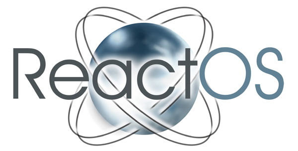
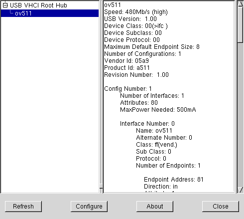
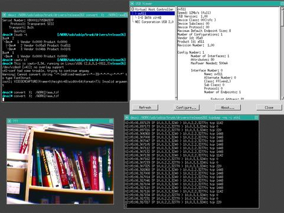

USB/IP Project aims to develop a general USB device sharing system over IP network. To share USB devices between computers with their full functionality, USB/IP encapsulates "USB I/O messages" into TCP/IP payloads and transmits them between computers. Download the latest version, or check it out by Subversion.
Feb 21, 2011: Updated windows client driver to allow x64 operation. We have received signed versions from the ReactOS project. (This is needed to allow installation without workarounds on Win7/Vista x64.) ReactOS has the proper code signing certificate and offer its use to other open source projects React OS Driver Signing. Great initiative!
Updated at Jul 10, 2009: The preview release of usbip windows client is now available. See screenshots and try it!
Updated at Jan 13, 2009: A couple of months ago, the latest drivers were included in the linux-staging tree. See discussions in linux-kernel ML, and in linux-usb ML. The project is extremely eager for developers who improve the drivers and userland tools.
about
The USB/IP Project aims to develop a general USB device sharing system over IP network. To share USB devices between computers with their full functionality, USB/IP encapsulates "USB I/O messages" into TCP/IP payloads and transmits them between computers. Original USB device drivers and applications can be also used for remote USB devices without any modification of them. A computer can use remote USB devices as if they were directly attached; for example, we can ...
- USB storage devices: fdisk, mkfs, mount/umount, file operations, play a DVD movie and record a DVD-R media.
- USB keyboards and USB mice: use with linux console and X Window System.
- USB webcams and USB speakers: view webcam, capture image data and play some music.
- USB printers, USB scanners, USB serial converters and USB Ethernet interfaces: ok, use fine.
It is currently implemented as Linux device drivers and available under the open source license GPL. Its I/O performance is enough practical in local area network for all types of devices, including isochronous devices, without any modification of Linux-original USB device drivers.
Documentation
Overview
In a client host, the VHCI (Virtual Host Controller Interface) driver is implemented as a USB host controller driver. The VHCI driver emulates a real USB host controller interface for virtual attachment/detachment, enumeration and initialization of remote USB devices. It encapsulates USB request blocks and then transmits USB/IP requests to remote server hosts. In a server host, the Stub driver is implemented as a USB per-device driver. The Stub driver decapsulates USB/IP requests into USB requests and then submit them to real USB devices.

USB/IP Design Overview
The project Wiki is here (depreciated soon by sourceforge update). See also source code and below papers.
- USB/IP - a Peripheral Bus Extension for Device Sharing over IP Network. Takahiro Hirofuchi, Eiji Kawai, Kazutoshi Fujikawa, and Hideki Sunahara. In the Proceedings of the FREENIX Track: USENIX Annual Technical Conference, pp. 47-60, April 2005. (Awarded FREENIX Track Best Paper!)
- USB/IP: A Transparent Device Sharing Technology over IP Network. Takahiro Hirofuchi, Eiji Kawai, Kazutoshi Fujikawa, and Hideki Sunahara. IPSJ Transactions on Advanced Computing Systems, Vol. 46, No. SIG11(ACS11), pp. 349-361, August 2005. (Also appeared in IPSJ Digital Courier.)
Install
You need to compile both kernel modules and utility programs. See READMEs in tarball.
Usage
See READMEs in tarball.
TODO & Future Plan
Read Todo list in the project Wiki.
FAQ
Read FAQ in the project Wiki.
- "client" and "server" are confusing...
A server host has physical USB devices which are exported to a client host. In the server host, load usbip_common_mod.ko and vhci-hcd.ko, and then use usbipd. The client host imports a USB device virtually; the client host may not have a real USB device. In the client host, load usbip_common_mod.ko and usbip.ko, and then use usbip. - USB/IP is stable ?
It basically works for most USB devices under LAN (Gb Ethernet is better). It has minimum features (e.g., attach/detach) and your contribution is welcome. - Is there a MS Windows client of USB/IP ?
There is one now, it is in the early stage of development, you can try it. If it can't work for your USB devices, please report bug to us. - Does your USB/IP implementation have compatibility with other similar products?
No, currently.
Screenshots
usbview
A remote USB webcam with an ov511 chip is virtually attached to a computer. We can see ov511 under USB VHCI Root Hub.
Desktop
xawtv is working for a remote USB webcam. A remote USB-HDD is also attached to the computer.
{kind=link}
Download
Latest Release
Download is available from sourceforge.net.
- File Releases and its RSS
SVN Repository
See this instruction.
Community
Mailing Lists
- usbip-devel (the character) lists.sourceforge.net
- Subscribe/Unsubscribe & Archives
Public Forums
Links
- Project Summary in sourceforge.net
- Wiki | RSS feeds | Statistics | Public Forums | Mailing Lists
- Old Page Mirror from http://usbip.naist.jp/
Contact
Normally, please use the above mailing lists and forums.
- usbip-devel (the character) lists.sourceforge.net (Recommended)
- Takahiro Hirofuchi < hirofuchi (the character) users.sourceforge.net >